3.2.4 Acceso del usuario o suplicante
1. Recursos necesarios
- Equipo ubuntu server con el servidor freeradius y openldap instalados y configurados.
- Punto de acceso o router wifi configurado como cliente radius. Para este caso de ejemplo, se ha utilizado un Router TP-LINK.
- Dispositivo inalámbrico, a saber: móvil, tablet y un equipo portátil con tarjeta wifi.
2. Acceso del usuario o suplicante al AP
Una vez se ha configurado el servidor y el cliente radius (punto de acceso), es el momento de conectarse desde un dispositivo móvil o desde un equipo portátil/sobremesa por medio de la interfaz inalámbrica y poder obtener los recursos de la red, para esta caso, la posibilidad de navegar por internet.
En la figura inferior, se describe el esquema utilizado en las pruebas de acceso de los dispositivos.
{kind=link}
{kind=link}
Figura 1. Esquema de red.
La operativa es la siguiente:
- Buscar la red (SSID).
- Acceder mediante un usuario LDAP con permisos de acceso a la red Wifi, para este caso de ejemplo:
- usuario: user01 y user02 que pertenecen al grupo GGProgramacion con permisos de acceso a la red wifi.
- password: eeepuc20.
- Navegar por internet.
1. Acceso desde un smartphone
Selección de la red
En primer lugar hay que buscar el SSID de la red y seleccionarla, para este caso, es la TP-LINK_FreeRadius_ldap. A continuación, se solicitan las credenciales de acceso a la misma. Se introducen las credenciales del usuario user01 que pertenece a un grupo con permisos de acceso a la red.
| 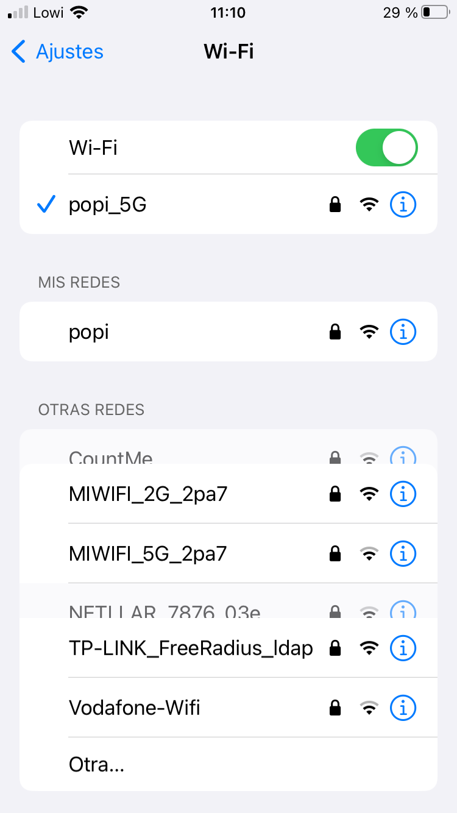 | 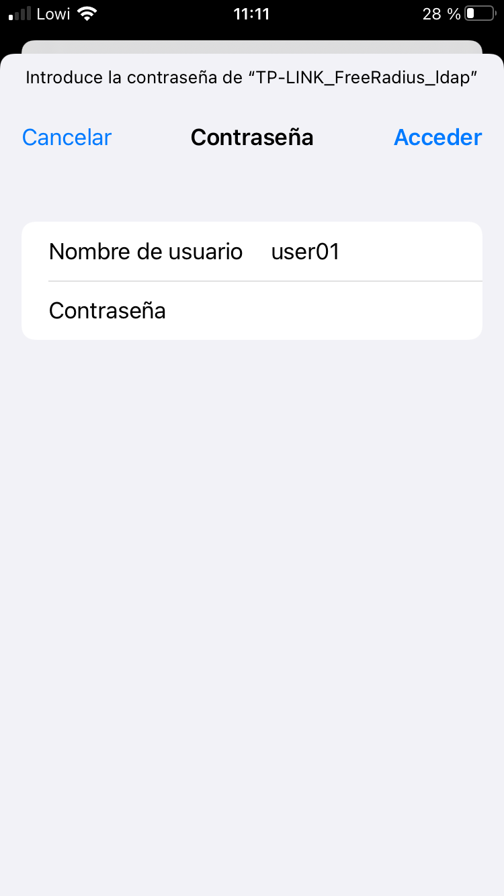 |
Certificado
Aparece el certificado del servidor y si se acceden a los detalles, se puede ver toda la información del mismo. Dado que el certificado no está cargado en el móvil, aparece como No fiable. Para continuar, hay que pulsar 'Confiar'.
| 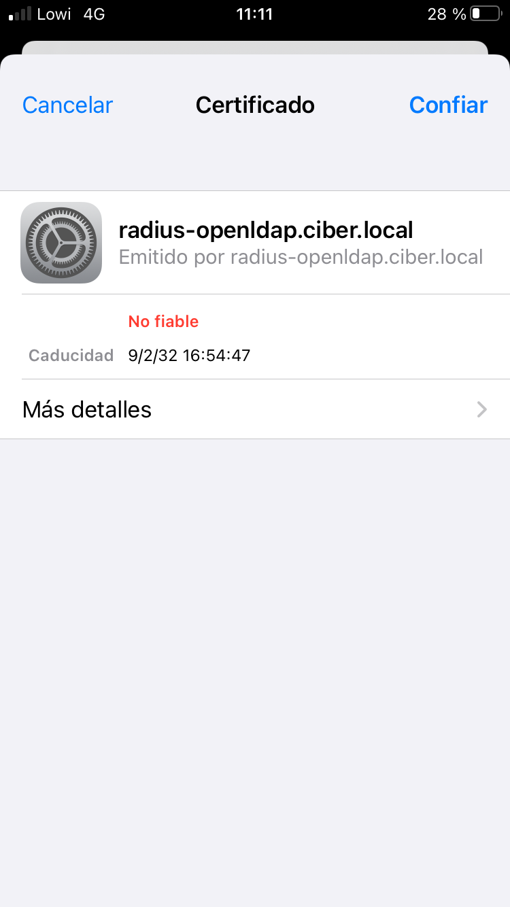 | 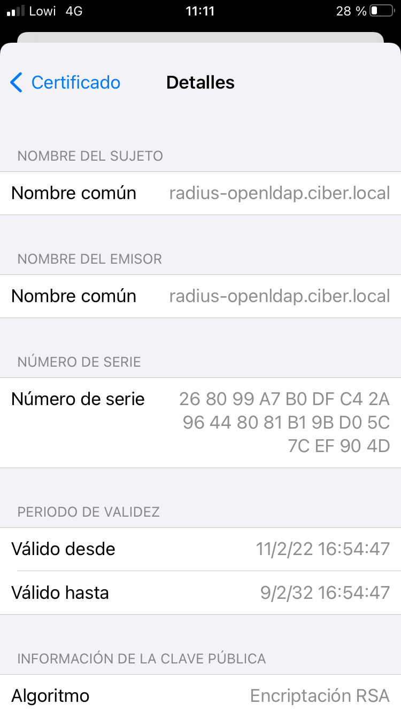 | 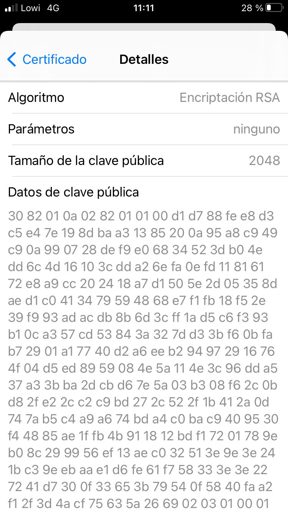 |
Acceso a la red
Una vez se ha validado con éxito el usuario, se accede a los datos obtenidos y a continuación, se prueba la navegación en internet. Se puede observar en la imagen inferior iquierda que se ha obtenido una ip dentro del rango de red y también el gw, máscara y dns que ha proporcionado el router wifi WAN, ya que es el que está configurado con un servidor dhcp para servir las direcciones a los equipos que se unen a la red.
| 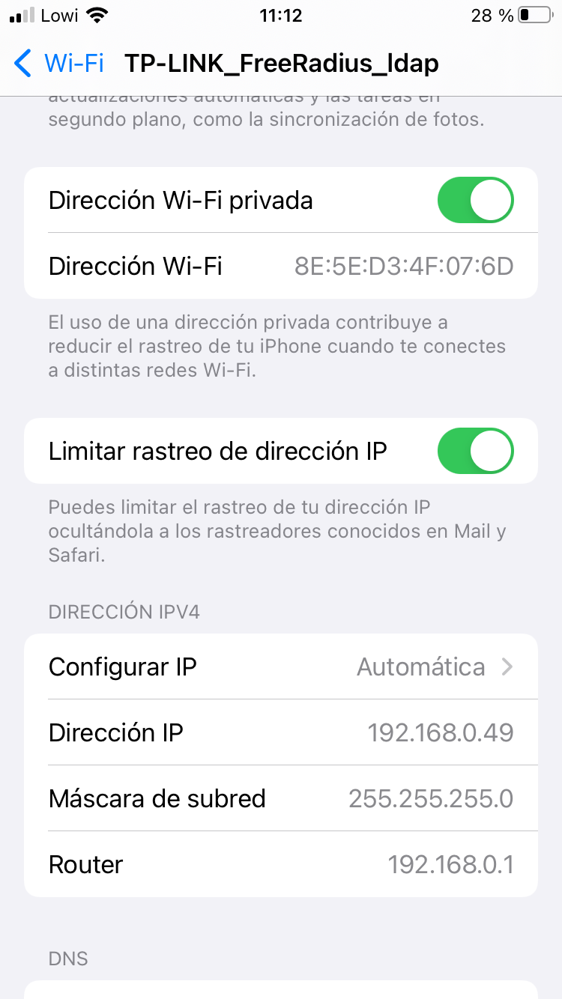 |
2. Acceso desde un equipo portátil
Encabezado 2
En primer lugar, se accede al menú Wifi para ver las redes disponibles. Como se observa en la figura inferior izquierda, se tiene disponible la red 'TP-LINK_FreeRadius_ldap' que es la que se ha configurado en el punto 3.2.3. Una vez se selecciona la red 'TP-LINK_FreeRadius_ldap', aparece una nueva ventana donde hay que introducir la seguridad. En primer lugar se realizará la autenticación con 'WAP/WAP Enterprise' y 'EAP protegido (PEAP)' que corresponde a la figura central y luego con 'autenticación TLS a través de túnel' (figura inferior derecha). De esa manera, se prueban las diferentes configuraciones que se realizaron en el servidor freeradius. En ambos casos, se selecciona 'No se necesita ningún certificado CA', ya que se ha impelmentado TTLS donde el certificado en el cliente es opcional. Por último, para ambos casos se introducen las credenciales y se deja la autenticación interna como MSCHAPV2. Para iniciar la autenticación, se pulsa Conectar.
| 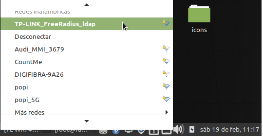 | 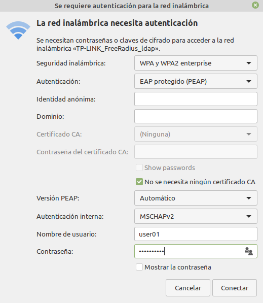 | 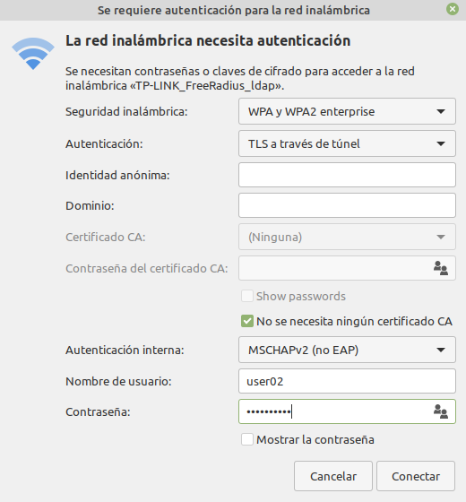 |
Obtención de ip y navegación
Una vez la autenticación se ha realizado con éxito, se lista la configuración de la red del equipo (figura inferior izquierda) y se observa que se ha concedido al mismo una dirección ip servida por el router wifi Huawei, por lo que ya se tiene acceso a internet y se puede navegar (figura inferior derecha).
| 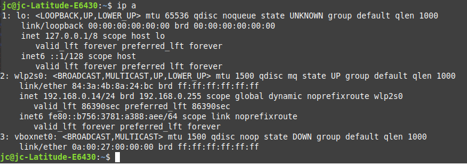 | 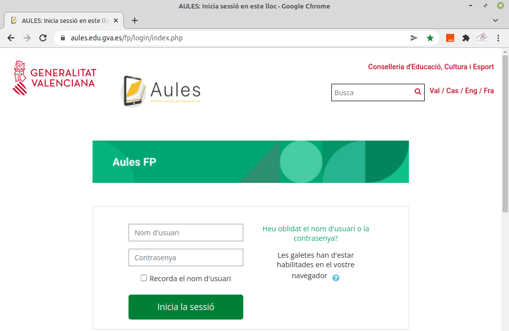 |
Si se accede al log del servidor freeradius, se pueden observar las conexiones que se han realizado así como otras que se han provocado para no tener éxito. Como se puede observar, las autenticaciones descritas anteriormente, están reflejadas en el los en la hora 11:12 y 11:16.
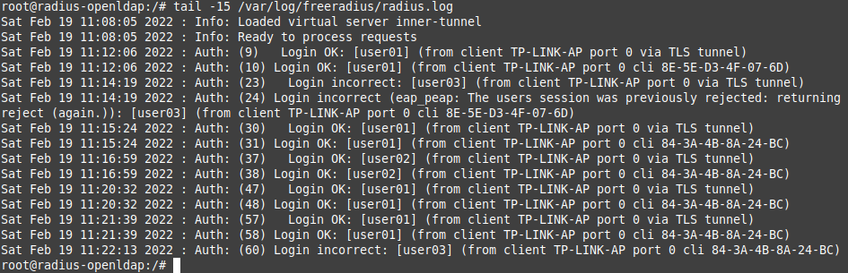
Figura 2. Accounting del servidor freeradius.
Obra publicada con Licencia Creative Commons Reconocimiento No comercial Compartir igual 4.0